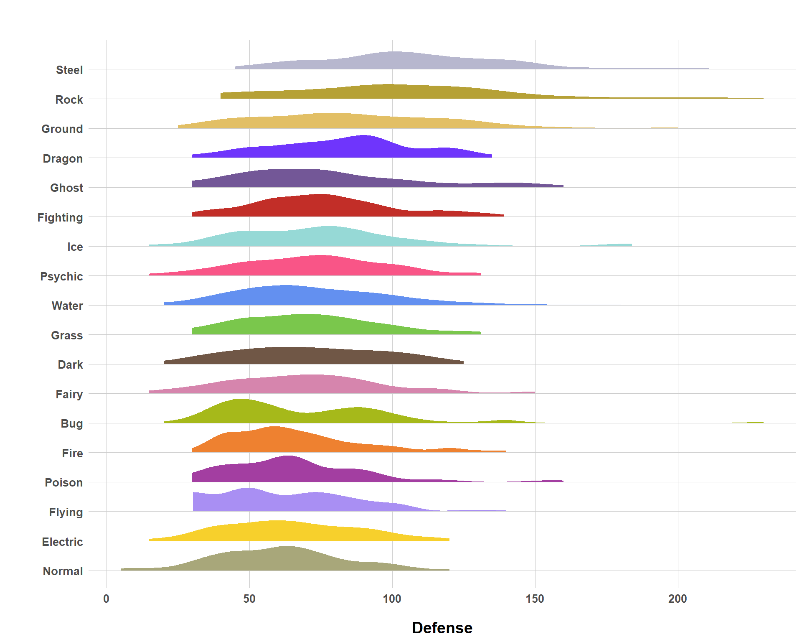

Predicting Pokemon Types with Pokedex Text Entries
nlp
llm
topic modeling
machine learning
pokemon
I’ve been looking for a way to work with Pokemon data for a while now, so I shoehorned topic modeling and natural language processing in there to finally justify it…
Published
September 15, 2025
Code
# Load Librariespacman::p_load("dplyr", # Data Manipulation"readxl", # Reading Excel Files"tidyr", # Pivoting"ggplot2", # Data Visualization"stringr", # Working with Strings"purrr", # Mapping"forcats", # Factors"ggdist", # Cool Distribution Plots"tibble", # rownames_to_columns"stringr", # Working with Texts"tidytext", # NLP"quanteda", # NLP"tm", # NLP"SnowballC", # NLP"caret", # Machine Learning"stopwords", # Stop Words"seededlda", # Seeded LDA"tinytable", # Tablesinstall =FALSE)# Define a Custom Themeblog_theme <-function() {theme_bw() +theme(panel.grid.major =element_line(color ="gray80", size =0.3),panel.grid.minor =element_blank(),panel.border =element_blank(),plot.background =element_rect(fill ="white", color =NA),plot.title =element_text(face ="bold", size =16, margin =margin(t =0, r =0, b =15, l =0)),axis.title.x =element_text(face ="bold", size =14, margin =margin(t =15, r =0, b =0, l =0)),axis.title.y =element_text(face ="bold", size =14, margin =margin(t =0, r =15, b =0, l =0)),strip.text =element_text(face ="bold"),axis.text.x =element_text(face ="bold", size =10), axis.text.y =element_text(face ="bold", size =10), axis.ticks.x =element_blank(), axis.ticks.y =element_blank(), strip.background =element_rect(fill ="grey80", color =NA),legend.title =element_text(face ="bold", size =14),legend.text =element_text(face ="bold", size =10, color ="grey25"), )}# Establish a Custom Color Schemecolors <-c("#0a697d","#0091af","#ddb067","#c43d56","#ab2a42")# Establish a Pokemon Color Schemetype_colors <-c(normal ="#A8A77A",fire ="#EE8130",water ="#6390F0",electric ="#F7D02C",grass ="#7AC74C",ice ="#96D9D6",fighting ="#C22E28",poison ="#A33EA1",ground ="#E2BF65",flying ="#A98FF3",psychic ="#F95587",bug ="#A6B91A",rock ="#B6A136",ghost ="#735797",dragon ="#6F35FC",dark ="#705746",steel ="#B7B7CE",fairy ="#D685AD")# Establish a Custom Naming Schemetype_names <-c(grass ="Grass",fire ="Fire",water ="Water",normal ="Normal",electric ="Electric",ice ="Ice",fighting ="Fighting",poison ="Poison",ground ="Ground",flying ="Flying️",psychic ="Psychic",bug ="Bug",rock ="Rock",ghost ="Ghost",dragon ="Dragon",dark ="Dark",steel ="Steel️",fairy ="Fairy")options(scipen =999)
Even if you’re not familiar with a lot of data science terminology, you’ve potentially heard of the term “natural language processing” (NLP). Most likely, you’ve probably heard of it within the context of AI/large language models (LLMs). Regardless, natural language processing really just refers to any statistical/machine learning/AI approach that seeks to uncover information and insights from human language. This can range from something as simple as a count of specific words in a document all the way to ChatGPT.
Somewhere in the middle of that wide distribution is the field of topic modeling. Topic modeling is a sub-field of NLP that is applicable when a researcher has a large body of text (books, chapters, open-text survey responses, Word documents, emails, etc.) and wants to extract some of the themes/topics referenced in this body (a corpus) without manually reading every item in that corpus. There’s a lot of different ways that you can do topic modeling, but typically when you mention it, the methodology of automatically extracting topics out of a corpus is driven by an algorithm developed for this very purpose (often, you will hear of something called “Latent Dirichlet Allocation”).
In my line of work, I deal a lot with survey data. All of us have taken surveys, so you’re probably familiar with the concept of an open-text survey question. For example, you could easily imagine something like “please describe anything else related to X that was not covered in this survey” and you’re given a text box to fill in (if you so choose, a lot of people just leave it blank or fill in “NA” if they don’t have anything to share/can’t be bothered to write anything down).
These open-text survey questions are great in one sense because they don’t force the respondents to match their answer to some set of discrete options the survey programmer designed. However, the difficult part is that it’s really hard to process and make sense of a lot of open-text survey responses. With discrete responses, it’s really easy since the response is converted to a numeric output. But how do you make sense of hundreds or thousands of open-text responses? You could manually code all of these responses but… have fun with that and let me know when you and your double checker coder are done at Christmas. Naturally, this scenario is a natural use-case for topic modeling. Consequently, I’ve used topic modeling algorithms a lot in my work for this very purpose.
But… is topic modeling the best way to handle problems like this anymore? Perhaps some of you have already thought, “why not feed the open-text response into ChatGPT and let it tell you what it’s about rather than having to learn these complex and, oftentimes, finicky topic modeling algorithms?” Well, one reason you might not do this is for privacy concerns. People are probably responding to these open-text items with an expectation that it won’t be fed into an LLM and, depending on who you are working for, you might have client restrictions that prevent you from feeding data into an LLM anyways. Another issue would be reproducibility. With a topic modeling algorithm, you can design the algorithm in such a way that the results are consistent and reproducible every time you run the same line of code. I’m not so sure you’re going to get the same properties out of querying an LLM (to be fair, you probably wouldn’t get the same results every time using human coders either).
Still Mellon et al. (2024) published an interesting study that compared the predictive accuracy of open-text survey topics when using human coders, LLMs, and topic models. A key takeaway is that some LLMs perform almost as well as human coders and often outperform topic modeling algorithms. I’m really interested in this because I’ve often seen firsthand the struggles that topic modeling algorithms can have. However, I have not been able to test out the LLM approach in my professional work for contract-related reasons. So, I decided to learn about this in a personal project… But what data set should I use?
Well I thought about this and considered just going to a popular social science survey and giving that a try… but that is too close to what I do for work and so I wanted to do something fun instead. Which is pretty much why I am using a Pokemon data set that sort of mimics what you’ll run into with an open-text survey response. In this blog, I’m going to be testing out a bunch of different ways to see if I can automatically classify a Pokemon’s type based on its Pokedex entry. Pokedex entries are often fairly sparse, with only 1-2 sentences for each Pokemon. That doesn’t sound like a lot (and it’s not) but it resembles the reality of many open-text responses where survey respondents often answer in incomplete sentences or, if you’re lucky, a handful of sentences. That’s just a natural challenge with analyzing open-text survey data, so I wanted to re-create that with a more laid back substitute.
Introducing the Pokemon Data Set
You can find a lot of different Pokemon data sets online, but I needed to find one that had Pokedex entries. Ideally, I would have liked to have found a data set that contained all Pokedex entries (for those unfamiliar, each generation of Pokemon games creates a new Pokedex entry for the Pokemon from previous generations). But, I could not find anything like that. Plus, it sort of creates bias in the analysis since older Pokemon will have more entries, which basically translates to more data, so no matter what we use, we’d always see bias that predicts older Pokemon’s types better than the types of newer Pokemon. So, I used this data set from Kaggle which contains Pokedex entries for all 1,025 Pokemon.
In the code chunk below, I am doing a couple of things to manipulate this data to be what I need it to be. For example, because some Pokemon have more than one type, I need to create another column that captures what type(s) Pokemon have. I do this by creating a dummy for each type (this will matter for making predictions later). Lastly, some Pokedex entries have the Pokemon’s name in the entry… which feels a little like cheating. Fortunately, when this happens, the Pokemon’s name is in full caps, so I use some regex to omit any string of text in a Pokemon’s Pokedex entry if it contains the Pokemon’s name.
pokedex <-read.csv("data/pokedex.csv")pokedex <- pokedex |># Create Type Binary Columnsmutate(type_grass =ifelse(str_detect(type, "grass"), 1, 0),type_fire =ifelse(str_detect(type, "fire"), 1, 0),type_water =ifelse(str_detect(type, "water"), 1, 0),type_normal =ifelse(str_detect(type, "normal"), 1, 0),type_electric =ifelse(str_detect(type, "electric"), 1, 0),type_ice =ifelse(str_detect(type, "ice"), 1, 0),type_fighting =ifelse(str_detect(type, "fighting"), 1, 0),type_poison =ifelse(str_detect(type, "poison"), 1, 0),type_ground =ifelse(str_detect(type, "ground"), 1, 0),type_flying =ifelse(str_detect(type, "flying"), 1, 0),type_psychic =ifelse(str_detect(type, "psychic"), 1, 0),type_bug =ifelse(str_detect(type, "bug"), 1, 0),type_rock =ifelse(str_detect(type, "rock"), 1, 0),type_ghost =ifelse(str_detect(type, "ghost"), 1, 0),type_dragon =ifelse(str_detect(type, "dragon"), 1, 0),type_dark =ifelse(str_detect(type, "dark"), 1, 0),type_steel =ifelse(str_detect(type, "steel"), 1, 0),type_fairy =ifelse(str_detect(type, "fairy"), 1, 0) ) |># Clean "info" Column to Purge Identifying Information (Like the Pokemon's Name Which Is in All Caps In This Data Set)mutate(info =str_remove_all(info, "\\b[A-Z]{2,}\\b"))
And just to make sure everything’s right, I’m going to take a look at defense statistics for each type. And… it looks like everything checks out with the distribution of defense statistics being higher in the steel, rock, ground, and dragon types. (Ghost type at #5 though?? Interesting).
Code
# Create a Data Frame of Level 1, 2, and 3 Evolutionpokedex <- pokedex |>group_by(evo_set) |>mutate(level1 =as.integer(row_number() ==1),level2 =as.integer(row_number() ==2),level3 =as.integer(row_number() ==3) ) |>ungroup()# Create a Long-Form Data Set for Typingpokedex_long <- pokedex |>pivot_longer(cols =starts_with("type_"),names_to ="type_name",values_to ="has_type" ) |># This Omits Copies Where a Given Pokemon Does Not Belong to a Given Type# For Dual-Typing, Two Copies Are Made for the Pokemonfilter(has_type ==1) |>mutate(type_name =str_remove(type_name, "type_"))# Distribution Plot by Defenseggplot(pokedex_long, aes(x = defense,y =fct_reorder(type_name, defense, .fun = mean),fill = type_name )) +stat_halfeye(adjust =0.7,point_interval =NULL ) +scale_y_discrete(labels = type_names) +scale_fill_manual(values = type_colors) +blog_theme() +labs(title ="",x ="Defense",y ="" ) +theme(legend.position ="none")

Distribution of Defense Stats Across Typing
Strategy
Prior to getting into classification strategies, we need to clean up the text data. Below, I am just creating a basic text data cleaning function that does some of the basics like standardizing punctuation, setting all text to lower-case, removing stop words, etc.
# Store Stop Words for Filteringstop_words_data <- stop_words$word# Create a Function to Clean Textclean_text <-function(text) { text |># Set to Lowercasestr_to_lower() |># Remove Possessive "'s"str_replace_all("'s\\b", "") |># Remove Plural Possessivesstr_replace_all("\\bs'\\b", "") |># Remove Punctuationstr_replace_all("[^a-z\\s]", " ") |># Remove Extra Spacestr_squish() |># Tokenizestr_split(" ") |>unlist() |># Remove Stop Wordsdiscard(~ .x %in% stop_words_data) |># Stem WorldswordStem(language ="en") |># Combine Everything Back Into a Stringstr_c(collapse =" ") }tidy_pokemon <- pokedex |>mutate(info =map_chr(info, clean_text))
Now, there’s a lot of different ways that we can go about trying to use Pokedex entries to classify a Pokemon’s type. The simplest method is string matching and the logic is very intuitive. Basically, for each type, we define a set of key words/terms that are assumed to be heavily associated with a given Pokemon type. Then, if the string response for a Pokedex entry contains a keyword for a given type, we predict that Pokemon as being of that given type. Super simple, but not perfect. If we define our key words too narrowly, we run the risk of a lot of false negatives. In contrast, if we are very liberal with our definition of key words, we run the risk of predicting a lot of false positives.
But perhaps if we use a bit more of a complicated method, it will be able to navigate the nuances of the data to navigate this tricky balance. To investigate this, I am using a topic modeling algorithm known as seeded Latent Dirichlet Allocation (SLDA), developed by Watanabe and Baturo (2024). To understand how this works, consider the basic Latent Dirichlet Allocation (LDA) model, a very popular, if not limited, topic modeling approach. LDA assumes that each text entry in a corpus of documents represents some mixture of topics. For example, if we have topics A, B, C, and D, then the contents of Document X could be 20% from Topic A, 50% from Topic B, 25% from Topic C, and 5% from Topic D. Furthermore, each topic itself is a mixture of words. If we are looking at a cooking manual and Topic A is “Baking” then some of the words that might contribute to Topic A might be “baking”, “oven”, “cookies”, “pre-heat”, etc. But, there’s a noticeable problem with LDA.
When executing LDA, the user simply tells the algorithm how many topics to look for (\(k\) = 4? 8? 100?). There is no right answer for how many topics there truly are, so there’s some educated guesswork to this. This itself is not a fundamental problem for LDA, but the actual core issue is that standard LDA has no way of telling the user what each topic is. Topic 1 is simply Topic 1 and it’s up to the user to figure out what that topic is actually about. Further, if a corpus truly only consists of 4 topics, but you tell the LDA algorithm to search for 10, it will sure enough find 10, even though 10 topics do not exist, so have fun interpreting your results and making sense of the topics it spits back out at you.
A lot of researchers in NLP have extended the LDA algorithm, either by enhancing the model directly or developing entirely different topics models. For this blog, I will be working with seeded LDA which really helps to overcome the problem of the algorithm being agnostic on the types of topics in the corpus. This is very useful when you already know what the topics are in a corpus, you just don’t know which topics each and every document in the corpus belongs to. And the {seededlda} R package makes this all very simple. Much like string matching, you can just supply key words/terms to the algorithm to define both the number of topics that the algorithm will look for, but also to strongly inform what those topics are. For example, I am telling the algorithm that “grass” is a topic and the following words (“grass”, “leaf”, “tree”, “plant”, “seed”, “bloom”, “flower”, “forest”) are key components to that topic. With these “seeds” supplied for each type, I will get\(\theta\) (theta) values back, which tell me the predicted topic distribution for each Pokemon.
But what are you actually supposed to do with these \(\theta\) values? I don’t think there’s anything tried and true (please correct me if I’m wrong), so I’m going to look at a lot of different things. A simple approach is to develop a simple classification rule using the \(\theta\) values. For example, let’s say we’ve ran our SLDA algorithm and get \(\theta\) values for each type of Bulbasaur. Let’s say they look something like this for the highest 5 \(\theta\) values.
Since we know Pokemon, these mock results make sense. These results tell us that 75% of Bulbasaur’s Pokedex entry comes from either the grass or the poison type. But how do we make predictions based on this? One idea is to just define an arbitrary classification rule using the theta value. For example, we could say that, for a each type, if \(\theta\) >= 0.5, then we assign it to that type. But, such a rule is very punitive when the algorithm is uncertain and spreads \(\theta\) across a lot of types. Further, for dual types, it is systematically biased since the distribution should be more evenly split. A way around this is to just lower the cut-off, i.e. \(\theta\) >= 0.4, \(\theta\) >= 0.3, etc. So, that’s what I do. I’ll be evaluating one strategy by using SLDA \(\theta\) values and assign three very simple classification rules.
Alternatively, we could just plug the \(\theta\) values into a machine learning algorithm and hope that it can pick up on some added nuance in assigning classifications, so we’ll give that a try as well.
# Establish the Cross Validation Parameterscv <-trainControl(method ="cv",number =5,classProbs =TRUE,summaryFunction = twoClassSummary,savePredictions =TRUE,sampling ="smote")type_cols <-paste0("type_", c("normal", "fire", "water", "grass", "electric", "ice", "fighting","poison", "ground", "flying", "psychic", "bug", "rock","ghost", "dragon", "dark", "steel", "fairy"))# Pre Learning Cleaningslda_theta <- slda_theta |># Convert All Outcomes to Factorsmutate(across(all_of(type_cols), ~factor(ifelse(. ==1, "yes", "no"), levels =c("no", "yes"))))# Train Each Modelgrass_model_thetas <-train(type_grass ~ grass + fire + water + electric + normal + ice + fighting + poison + ground + flying + psychic + bug + rock + ghost + dragon + dark + steel + fairy, data = slda_theta, method ="rf", metric ="ROC", trControl = cv)fire_model_thetas <-train(type_fire ~ grass + fire + water + electric + normal + ice + fighting + poison + ground + flying + psychic + bug + rock + ghost + dragon + dark + steel + fairy, data = slda_theta, method ="rf", metric ="ROC", trControl = cv)water_model_thetas <-train(type_water ~ grass + fire + water + electric + normal + ice + fighting + poison + ground + flying + psychic + bug + rock + ghost + dragon + dark + steel + fairy, data = slda_theta, method ="rf", metric ="ROC", trControl = cv)normal_model_thetas <-train(type_normal ~ grass + fire + water + electric + normal + ice + fighting + poison + ground + flying + psychic + bug + rock + ghost + dragon + dark + steel + fairy, data = slda_theta, method ="rf", metric ="ROC", trControl = cv)electric_model_thetas <-train(type_electric ~ grass + fire + water + electric + normal + ice + fighting + poison + ground + flying + psychic + bug + rock + ghost + dragon + dark + steel + fairy, data = slda_theta, method ="rf", metric ="ROC", trControl = cv)ice_model_thetas <-train(type_ice ~ grass + fire + water + electric + normal + ice + fighting + poison + ground + flying + psychic + bug + rock + ghost + dragon + dark + steel + fairy, data = slda_theta, method ="rf", metric ="ROC", trControl = cv)fighting_model_thetas <-train(type_fighting ~ grass + fire + water + electric + normal + ice + fighting + poison + ground + flying + psychic + bug + rock + ghost + dragon + dark + steel + fairy, data = slda_theta, method ="rf", metric ="ROC", trControl = cv)poison_model_thetas <-train(type_poison ~ grass + fire + water + electric + normal + ice + fighting + poison + ground + flying + psychic + bug + rock + ghost + dragon + dark + steel + fairy, data = slda_theta, method ="rf", metric ="ROC", trControl = cv)ground_model_thetas <-train(type_ground ~ grass + fire + water + electric + normal + ice + fighting + poison + ground + flying + psychic + bug + rock + ghost + dragon + dark + steel + fairy, data = slda_theta, method ="rf", metric ="ROC", trControl = cv)flying_model_thetas <-train(type_flying ~ grass + fire + water + electric + normal + ice + fighting + poison + ground + flying + psychic + bug + rock + ghost + dragon + dark + steel + fairy, data = slda_theta, method ="rf", metric ="ROC", trControl = cv)psychic_model_thetas <-train(type_psychic ~ grass + fire + water + electric + normal + ice + fighting + poison + ground + flying + psychic + bug + rock + ghost + dragon + dark + steel + fairy, data = slda_theta, method ="rf", metric ="ROC", trControl = cv)bug_model_thetas <-train(type_bug ~ grass + fire + water + electric + normal + ice + fighting + poison + ground + flying + psychic + bug + rock + ghost + dragon + dark + steel + fairy, data = slda_theta, method ="rf", metric ="ROC", trControl = cv)rock_model_thetas <-train(type_rock ~ grass + fire + water + electric + normal + ice + fighting + poison + ground + flying + psychic + bug + rock + ghost + dragon + dark + steel + fairy, data = slda_theta, method ="rf", metric ="ROC", trControl = cv)ghost_model_thetas <-train(type_ghost ~ grass + fire + water + electric + normal + ice + fighting + poison + ground + flying + psychic + bug + rock + ghost + dragon + dark + steel + fairy, data = slda_theta, method ="rf", metric ="ROC", trControl = cv)dragon_model_thetas <-train(type_dragon ~ grass + fire + water + electric + normal + ice + fighting + poison + ground + flying + psychic + bug + rock + ghost + dragon + dark + steel + fairy, data = slda_theta, method ="rf", metric ="ROC", trControl = cv)dark_model_thetas <-train(type_dark ~ grass + fire + water + electric + normal + ice + fighting + poison + ground + flying + psychic + bug + rock + ghost + dragon + dark + steel + fairy, data = slda_theta, method ="rf", metric ="ROC", trControl = cv)steel_model_thetas <-train(type_steel ~ grass + fire + water + electric + normal + ice + fighting + poison + ground + flying + psychic + bug + rock + ghost + dragon + dark + steel + fairy, data = slda_theta, method ="rf", metric ="ROC", trControl = cv)fairy_model_thetas <-train(type_fairy ~ grass + fire + water + electric + normal + ice + fighting + poison + ground + flying + psychic + bug + rock + ghost + dragon + dark + steel + fairy, data = slda_theta, method ="rf", metric ="ROC", trControl = cv)# Store Models in a Listmodel_list_thetas <-list(grass = grass_model_thetas,fire = fire_model_thetas,water = water_model_thetas,normal = normal_model_thetas,electric = electric_model_thetas,ice = ice_model_thetas,fighting = fighting_model_thetas,poison = poison_model_thetas,ground = ground_model_thetas,flying = flying_model_thetas,psychic = psychic_model_thetas,bug = bug_model_thetas,rock = rock_model_thetas,ghost = ghost_model_thetas,dragon = dragon_model_thetas,dark = dark_model_thetas,steel = steel_model_thetas,fairy = fairy_model_thetas)# Create an Empty Data Frame to Store Resultstheta_model_metrics <-data.frame()# Loop Through Each Modelfor (type innames(model_list_thetas)) { model <- model_list_thetas[[type]]# Get Best Tuning Parameters best_mtry <- model$bestTune$mtry preds_best <- model$pred |>filter(mtry == best_mtry)# Confusion Matrix cm <-confusionMatrix(preds_best$pred, preds_best$obs, positive ="yes")# Store Metrics theta_model_metrics <-bind_rows(theta_model_metrics, data.frame(type = type,sensitivity = cm$byClass["Sensitivity"],specificity = cm$byClass["Specificity"],predictors ="thetas_only" ))}
In the event that \(\theta\) values alone aren’t sufficient, maybe it’s possible that adding a binary indicator for string matches alongside\(\theta\) values as predictors in a machine learning algorithm aids in predictive accuracy, so I’m going to give that a shot as well.
# Add String Matches to Theta Data Frameslda_theta <- slda_theta |>mutate(grass_match =if_else(str_detect(info, str_c(grass_keys, collapse ="|")), 1, 0),fire_match =if_else(str_detect(info, str_c(fire_keys, collapse ="|")), 1, 0),water_match =if_else(str_detect(info, str_c(water_keys, collapse ="|")), 1, 0),normal_match =if_else(str_detect(info, str_c(normal_keys, collapse ="|")), 1, 0),electric_match =if_else(str_detect(info, str_c(electric_keys, collapse ="|")), 1, 0),ice_match =if_else(str_detect(info, str_c(ice_keys, collapse ="|")), 1, 0),fighting_match =if_else(str_detect(info, str_c(fighting_keys, collapse ="|")), 1, 0),poison_match =if_else(str_detect(info, str_c(poison_keys, collapse ="|")), 1, 0),ground_match =if_else(str_detect(info, str_c(ground_keys, collapse ="|")), 1, 0),flying_match =if_else(str_detect(info, str_c(flying_keys, collapse ="|")), 1, 0),psychic_match =if_else(str_detect(info, str_c(psychic_keys, collapse ="|")), 1, 0),bug_match =if_else(str_detect(info, str_c(bug_keys, collapse ="|")), 1, 0),rock_match =if_else(str_detect(info, str_c(rock_keys, collapse ="|")), 1, 0),ghost_match =if_else(str_detect(info, str_c(ghost_keys, collapse ="|")), 1, 0),dragon_match =if_else(str_detect(info, str_c(dragon_keys, collapse ="|")), 1, 0),dark_match =if_else(str_detect(info, str_c(dark_keys, collapse ="|")), 1, 0),steel_match =if_else(str_detect(info, str_c(steel_keys, collapse ="|")), 1, 0),fairy_match =if_else(str_detect(info, str_c(fairy_keys, collapse ="|")), 1, 0) )# Train Modelsgrass_model_thetas_sm <-train(type_grass ~ grass + fire + water + electric + normal + ice + fighting + poison + ground + flying + psychic + bug + rock + ghost + dragon + dark + steel + fairy + grass_match, data = slda_theta, method ="rf", metric ="ROC", trControl = cv)fire_model_thetas_sm <-train(type_fire ~ grass + fire + water + electric + normal + ice + fighting + poison + ground + flying + psychic + bug + rock + ghost + dragon + dark + steel + fairy + fire_match, data = slda_theta, method ="rf", metric ="ROC", trControl = cv)water_model_thetas_sm <-train(type_water ~ grass + fire + water + electric + normal + ice + fighting + poison + ground + flying + psychic + bug + rock + ghost + dragon + dark + steel + fairy + water_match, data = slda_theta, method ="rf", metric ="ROC", trControl = cv)normal_model_thetas_sm <-train(type_normal ~ grass + fire + water + electric + normal + ice + fighting + poison + ground + flying + psychic + bug + rock + ghost + dragon + dark + steel + fairy + normal_match, data = slda_theta, method ="rf", metric ="ROC", trControl = cv)electric_model_thetas_sm <-train(type_electric ~ grass + fire + water + electric + normal + ice + fighting + poison + ground + flying + psychic + bug + rock + ghost + dragon + dark + steel + fairy + electric_match, data = slda_theta, method ="rf", metric ="ROC", trControl = cv)ice_model_thetas_sm <-train(type_ice ~ grass + fire + water + electric + normal + ice + fighting + poison + ground + flying + psychic + bug + rock + ghost + dragon + dark + steel + fairy + ice_match, data = slda_theta, method ="rf", metric ="ROC", trControl = cv)fighting_model_thetas_sm <-train(type_fighting ~ grass + fire + water + electric + normal + ice + fighting + poison + ground + flying + psychic + bug + rock + ghost + dragon + dark + steel + fairy + fighting_match, data = slda_theta, method ="rf", metric ="ROC", trControl = cv)poison_model_thetas_sm <-train(type_poison ~ grass + fire + water + electric + normal + ice + fighting + poison + ground + flying + psychic + bug + rock + ghost + dragon + dark + steel + fairy + poison_match, data = slda_theta, method ="rf", metric ="ROC", trControl = cv)ground_model_thetas_sm <-train(type_ground ~ grass + fire + water + electric + normal + ice + fighting + poison + ground + flying + psychic + bug + rock + ghost + dragon + dark + steel + fairy + ground_match, data = slda_theta, method ="rf", metric ="ROC", trControl = cv)flying_model_thetas_sm <-train(type_flying ~ grass + fire + water + electric + normal + ice + fighting + poison + ground + flying + psychic + bug + rock + ghost + dragon + dark + steel + fairy + flying_match, data = slda_theta, method ="rf", metric ="ROC", trControl = cv)psychic_model_thetas_sm <-train(type_psychic ~ grass + fire + water + electric + normal + ice + fighting + poison + ground + flying + psychic + bug + rock + ghost + dragon + dark + steel + fairy + psychic_match, data = slda_theta, method ="rf", metric ="ROC", trControl = cv)bug_model_thetas_sm <-train(type_bug ~ grass + fire + water + electric + normal + ice + fighting + poison + ground + flying + psychic + bug + rock + ghost + dragon + dark + steel + fairy + bug_match, data = slda_theta, method ="rf", metric ="ROC", trControl = cv)rock_model_thetas_sm <-train(type_rock ~ grass + fire + water + electric + normal + ice + fighting + poison + ground + flying + psychic + bug + rock + ghost + dragon + dark + steel + fairy + rock_match, data = slda_theta, method ="rf", metric ="ROC", trControl = cv)ghost_model_thetas_sm <-train(type_ghost ~ grass + fire + water + electric + normal + ice + fighting + poison + ground + flying + psychic + bug + rock + ghost + dragon + dark + steel + fairy + ghost_match, data = slda_theta, method ="rf", metric ="ROC", trControl = cv)dragon_model_thetas_sm <-train(type_dragon ~ grass + fire + water + electric + normal + ice + fighting + poison + ground + flying + psychic + bug + rock + ghost + dragon + dark + steel + fairy + dragon_match, data = slda_theta, method ="rf", metric ="ROC", trControl = cv)dark_model_thetas_sm <-train(type_dark ~ grass + fire + water + electric + normal + ice + fighting + poison + ground + flying + psychic + bug + rock + ghost + dragon + dark + steel + fairy + dark_match, data = slda_theta, method ="rf", metric ="ROC", trControl = cv)steel_model_thetas_sm <-train(type_steel ~ grass + fire + water + electric + normal + ice + fighting + poison + ground + flying + psychic + bug + rock + ghost + dragon + dark + steel + fairy + steel_match, data = slda_theta, method ="rf", metric ="ROC", trControl = cv)fairy_model_thetas_sm <-train(type_fairy ~ grass + fire + water + electric + normal + ice + fighting + poison + ground + flying + psychic + bug + rock + ghost + dragon + dark + steel + fairy + fairy_match, data = slda_theta, method ="rf", metric ="ROC", trControl = cv)# Store Models in a Listmodel_list_thetas_sm <-list(grass = grass_model_thetas_sm,fire = fire_model_thetas_sm,water = water_model_thetas_sm,normal = normal_model_thetas_sm,electric = electric_model_thetas_sm,ice = ice_model_thetas_sm,fighting = fighting_model_thetas_sm,poison = poison_model_thetas_sm,ground = ground_model_thetas_sm,flying = flying_model_thetas_sm,psychic = psychic_model_thetas_sm,bug = bug_model_thetas_sm,rock = rock_model_thetas_sm,ghost = ghost_model_thetas_sm,dragon = dragon_model_thetas_sm,dark = dark_model_thetas_sm,steel = steel_model_thetas_sm,fairy = fairy_model_thetas_sm)# Create an Empty Data Frame to Store Resultstheta_sm_model_metrics <-data.frame() # Loop Through Each Modelfor (type innames(model_list_thetas_sm)) { model <- model_list_thetas_sm[[type]]# Get Best Tuning Parameters best_mtry <- model$bestTune$mtry preds_best <- model$pred |>filter(mtry == best_mtry)# Confusion Matrix cm <-confusionMatrix(preds_best$pred, preds_best$obs, positive ="yes")# Extract Metrics theta_sm_model_metrics <-bind_rows(theta_sm_model_metrics, data.frame(type = type,sensitivity = cm$byClass["Sensitivity"],specificity = cm$byClass["Specificity"],predictors ="thetas_and_string_matching" ))}
Lastly, maybe predictions can be enhanced if, alongside \(\theta\) values and string matching dummies, we include Pokemon statistics as predictors (HP, attack, defense, speed, etc.). Speed is heavily associated with types like electric, flying, rock, and steel. Types like psychic, electric, and ghost tend to have higher special attack statistics. So maybe including these as predictors could be helpful.
# Train Modelsgrass_model_thetas_sm_stats <-train(type_grass ~ grass + fire + water + electric + normal + ice + fighting + poison + ground + flying + psychic + bug + rock + ghost + dragon + dark + steel + fairy + grass_match + hp + attack + defense + s_attack + s_defense + speed, data = slda_theta, method ="rf", metric ="ROC", trControl = cv)fire_model_thetas_sm_stats <-train(type_fire ~ grass + fire + water + electric + normal + ice + fighting + poison + ground + flying + psychic + bug + rock + ghost + dragon + dark + steel + fairy + fire_match + hp + attack + defense + s_attack + s_defense + speed, data = slda_theta, method ="rf", metric ="ROC", trControl = cv)water_model_thetas_sm_stats <-train(type_water ~ grass + fire + water + electric + normal + ice + fighting + poison + ground + flying + psychic + bug + rock + ghost + dragon + dark + steel + fairy + water_match + hp + attack + defense + s_attack + s_defense + speed, data = slda_theta, method ="rf", metric ="ROC", trControl = cv)normal_model_thetas_sm_stats <-train(type_normal ~ grass + fire + water + electric + normal + ice + fighting + poison + ground + flying + psychic + bug + rock + ghost + dragon + dark + steel + fairy + normal_match + hp + attack + defense + s_attack + s_defense + speed, data = slda_theta, method ="rf", metric ="ROC", trControl = cv)electric_model_thetas_sm_stats <-train(type_electric ~ grass + fire + water + electric + normal + ice + fighting + poison + ground + flying + psychic + bug + rock + ghost + dragon + dark + steel + fairy + electric_match + hp + attack + defense + s_attack + s_defense + speed, data = slda_theta, method ="rf", metric ="ROC", trControl = cv)ice_model_thetas_sm_stats <-train(type_ice ~ grass + fire + water + electric + normal + ice + fighting + poison + ground + flying + psychic + bug + rock + ghost + dragon + dark + steel + fairy + ice_match + hp + attack + defense + s_attack + s_defense + speed, data = slda_theta, method ="rf", metric ="ROC", trControl = cv)fighting_model_thetas_sm_stats <-train(type_fighting ~ grass + fire + water + electric + normal + ice + fighting + poison + ground + flying + psychic + bug + rock + ghost + dragon + dark + steel + fairy + fighting_match + hp + attack + defense + s_attack + s_defense + speed, data = slda_theta, method ="rf", metric ="ROC", trControl = cv)poison_model_thetas_sm_stats <-train(type_poison ~ grass + fire + water + electric + normal + ice + fighting + poison + ground + flying + psychic + bug + rock + ghost + dragon + dark + steel + fairy + poison_match + hp + attack + defense + s_attack + s_defense + speed, data = slda_theta, method ="rf", metric ="ROC", trControl = cv)ground_model_thetas_sm_stats <-train(type_ground ~ grass + fire + water + electric + normal + ice + fighting + poison + ground + flying + psychic + bug + rock + ghost + dragon + dark + steel + fairy + ground_match + hp + attack + defense + s_attack + s_defense + speed, data = slda_theta, method ="rf", metric ="ROC", trControl = cv)flying_model_thetas_sm_stats <-train(type_flying ~ grass + fire + water + electric + normal + ice + fighting + poison + ground + flying + psychic + bug + rock + ghost + dragon + dark + steel + fairy + flying_match + hp + attack + defense + s_attack + s_defense + speed, data = slda_theta, method ="rf", metric ="ROC", trControl = cv)psychic_model_thetas_sm_stats <-train(type_psychic ~ grass + fire + water + electric + normal + ice + fighting + poison + ground + flying + psychic + bug + rock + ghost + dragon + dark + steel + fairy + psychic_match + hp + attack + defense + s_attack + s_defense + speed, data = slda_theta, method ="rf", metric ="ROC", trControl = cv)bug_model_thetas_sm_stats <-train(type_bug ~ grass + fire + water + electric + normal + ice + fighting + poison + ground + flying + psychic + bug + rock + ghost + dragon + dark + steel + fairy + bug_match + hp + attack + defense + s_attack + s_defense + speed, data = slda_theta, method ="rf", metric ="ROC", trControl = cv)rock_model_thetas_sm_stats <-train(type_rock ~ grass + fire + water + electric + normal + ice + fighting + poison + ground + flying + psychic + bug + rock + ghost + dragon + dark + steel + fairy + rock_match + hp + attack + defense + s_attack + s_defense + speed, data = slda_theta, method ="rf", metric ="ROC", trControl = cv)ghost_model_thetas_sm_stats <-train(type_ghost ~ grass + fire + water + electric + normal + ice + fighting + poison + ground + flying + psychic + bug + rock + ghost + dragon + dark + steel + fairy + ghost_match + hp + attack + defense + s_attack + s_defense + speed, data = slda_theta, method ="rf", metric ="ROC", trControl = cv)dragon_model_thetas_sm_stats <-train(type_dragon ~ grass + fire + water + electric + normal + ice + fighting + poison + ground + flying + psychic + bug + rock + ghost + dragon + dark + steel + fairy + dragon_match + hp + attack + defense + s_attack + s_defense + speed, data = slda_theta, method ="rf", metric ="ROC", trControl = cv)dark_model_thetas_sm_stats <-train(type_dark ~ grass + fire + water + electric + normal + ice + fighting + poison + ground + flying + psychic + bug + rock + ghost + dragon + dark + steel + fairy + dark_match + hp + attack + defense + s_attack + s_defense + speed, data = slda_theta, method ="rf", metric ="ROC", trControl = cv)steel_model_thetas_sm_stats <-train(type_steel ~ grass + fire + water + electric + normal + ice + fighting + poison + ground + flying + psychic + bug + rock + ghost + dragon + dark + steel + fairy + steel_match + hp + attack + defense + s_attack + s_defense + speed, data = slda_theta, method ="rf", metric ="ROC", trControl = cv)fairy_model_thetas_sm_stats <-train(type_fairy ~ grass + fire + water + electric + normal + ice + fighting + poison + ground + flying + psychic + bug + rock + ghost + dragon + dark + steel + fairy + fairy_match + hp + attack + defense + s_attack + s_defense + speed, data = slda_theta, method ="rf", metric ="ROC", trControl = cv)# Store Models in a Listmodel_list_thetas_sm_stats <-list(grass = grass_model_thetas_sm_stats,fire = fire_model_thetas_sm_stats,water = water_model_thetas_sm_stats,normal = normal_model_thetas_sm_stats,electric = electric_model_thetas_sm_stats,ice = ice_model_thetas_sm_stats,fighting = fighting_model_thetas_sm_stats,poison = poison_model_thetas_sm_stats,ground = ground_model_thetas_sm_stats,flying = flying_model_thetas_sm_stats,psychic = psychic_model_thetas_sm_stats,bug = bug_model_thetas_sm_stats,rock = rock_model_thetas_sm_stats,ghost = ghost_model_thetas_sm_stats,dragon = dragon_model_thetas_sm_stats,dark = dark_model_thetas_sm_stats,steel = steel_model_thetas_sm_stats,fairy = fairy_model_thetas_sm_stats)# Create an Empty Data Frame to Store Resultstheta_sm_stats_model_metrics <-data.frame()# Loop Through Each Modelfor (type innames(model_list_thetas_sm_stats)) { model <- model_list_thetas_sm_stats[[type]]# Get Best Tuning Parameters best_mtry <- model$bestTune$mtry preds_best <- model$pred |>filter(mtry == best_mtry)# Confusion Matrix cm <-confusionMatrix(preds_best$pred, preds_best$obs, positive ="yes")# Extract metrics theta_sm_stats_model_metrics <-bind_rows(theta_sm_stats_model_metrics, data.frame(type = type,sensitivity = cm$byClass["Sensitivity"],specificity = cm$byClass["Specificity"],predictors ="thetas_string_matching_and_stats" ))}
Lastly, we arrive at the question of, “should we even care about topic modeling at all?”. Why bother with all of this code when I can just give a spreadsheet and a prompt to ChatGPT and ask it predict Pokemon types based on their Pokedex entries? That’s a fair enough point, so I tried that as well with Chat GPT-5 with the following prompt:
“Please read this spreadsheet. Each row is a Pokémon and contains its Pokédex entry. Based on the info column alone, predict up to 2 likely Pokémon types for each entry. Return a table in spreadsheet form. There should be 18 columns stored as a dummy for each type. Preface each type columns with”llm_” and then the type name.”
# Import the Spreadsheet Chat GPT Gave Mellm_pokemon <-read_excel("data/Pokemon_LLM_Types.xlsx")# Merge with the Tidy Pokemon Data Setllm_pokemon <-full_join(llm_pokemon, tidy_pokemon, by =c("id", "name", "info"))# Create an Empty Data Frame to Store Resultsllm_metrics <-data.frame()# Loop Through Each Type for Predictive Metricsfor (type in types) { match_col <-paste0("llm_", type) true_col <-paste0("type_", type) true <-factor(ifelse(llm_pokemon[[true_col]] ==1, "yes", "no"), levels =c("yes", "no")) predicted <-factor(ifelse(llm_pokemon[[match_col]] ==1, "yes", "no"), levels =c("yes", "no"))# Confusion Matrix cm <-confusionMatrix(predicted, true, positive ="yes")# Store Metrics llm_metrics <-bind_rows(llm_metrics, data.frame(type = type,sensitivity = cm$byClass["Sensitivity"],specificity = cm$byClass["Specificity"],predictors ="LLM" ))}
Now, with all of these predictions and different strategies merged into a single data frame, let’s see how they fared.
all_metrics <-full_join(string_matching_metrics, theta_model_metrics, by =c("type", "sensitivity", "specificity", "predictors")) |>full_join(theta_sm_model_metrics, by =c("type", "sensitivity", "specificity", "predictors")) |>full_join(theta_sm_stats_model_metrics, by =c("type", "sensitivity", "specificity", "predictors")) |>full_join(theta_30_sm_metrics, by =c("type", "sensitivity", "specificity", "predictors")) |>full_join(theta_40_sm_metrics, by =c("type", "sensitivity", "specificity", "predictors")) |>full_join(theta_50_sm_metrics, by =c("type", "sensitivity", "specificity", "predictors")) |>full_join(llm_metrics, by =c("type", "sensitivity", "specificity", "predictors"))
Results
The plot below shows the sensitivity (accurate positive predictions / total positives) for each strategy. Because each type is a separate classification task, the balance between positives and negatives (i.e. “is grass type” vs. “is not grass type”) is heavily skewed towards negatives. In this context, by default, just about any approach you use will be pretty conservative and push predictions towards negatives. As a result, I’m more interested in whether any of my approaches can identify the type a Pokemon is rather than the type a Pokemon is not. Each strategy has 18 dots, one for each type.
And, as you can see, yikes! It’s not looking great. I’d arbitrarily feel alright is the dots were clustered in the 60-80% range, but we are not really observing that here. Furthermore, the methods that were the most technically “complex” by far perform the worst. All three strategies that relied on a machine learning algorithm really struggled to detect positive values. Now, part of this could be explained by a lack of technical complexity regarding these algorithms, but I find it interesting that they still perform so poorly. Likewise, the LLM-generated predictions also perform much worse than the simple classification rules that rely on strings or theta values. But again, similar to the ML-based predictions, the LLM-generated predictions could also be improved with more attention focused in the prompts being given.
The big takeaway here should not be that the simplest approach is always the best. I think it would be fair to make two inferences based on these results. First, a simple approach can actually perform quite well on its own. However, while the floor for predictive performance may be pretty high, the ceiling might not be as high as more technical approaches. This leads to the second point. If you want to use a more technically complex approach (machine learning) or LLMs, it likely will require a bit of up-front lift to ensure that it performs better than simpler classification strategies. This is probably especially true for this example where the text data that we have for each Pokemon is incredibly sparse. I personally don’t think the results would look like if, for example, we had a page a piece for each Pokemon.
Next, we can evaluate which types each approach was able to predict with higher or lower accuracy. And there’s some neat stuff here. Regardless of the strategy used, some types are much more easy to classify than others. The most prominent examples are the ice, electric, and fire types. I’m not very surprised with this. Personally, while writing out the key terms/seeds, I had a much easier time thinking of these terms when dealing with the “elemental” and less abstract Pokemon types. We have tons of words that we use to describe things like electricity and fire and so it’s easy to find a list of terms that are distinct for those types.
Predictive Performance of Different Strategies by Pokemon Type
But what about the types that are much more abstract? Like fairy, dragon, and normal? As you can see, and as expected, a lot of the approaches used really struggled to classify these types correctly. After all, what makes a fairy-type Pokemon fairy-type? What about normal types? For normal types in particular, what really makes them normal is just the absence of any elemental or magical powers. A type being defined in negative terms is one that is really hard to classify, at least when solely using the information (Pokedex entries) for this analysis.
Conclusion
Overall, can you reliably predict a Pokemon’s type by using information from its Pokedex entries (and, in some cases, its statistics)? Not really. Or at least, not at a casual glance. Further, much like all other things data science-y, your results will only be as good as your data. Likewise, as your data worsens, either in scope or quality, “simpler” strategies are not always the least desired.